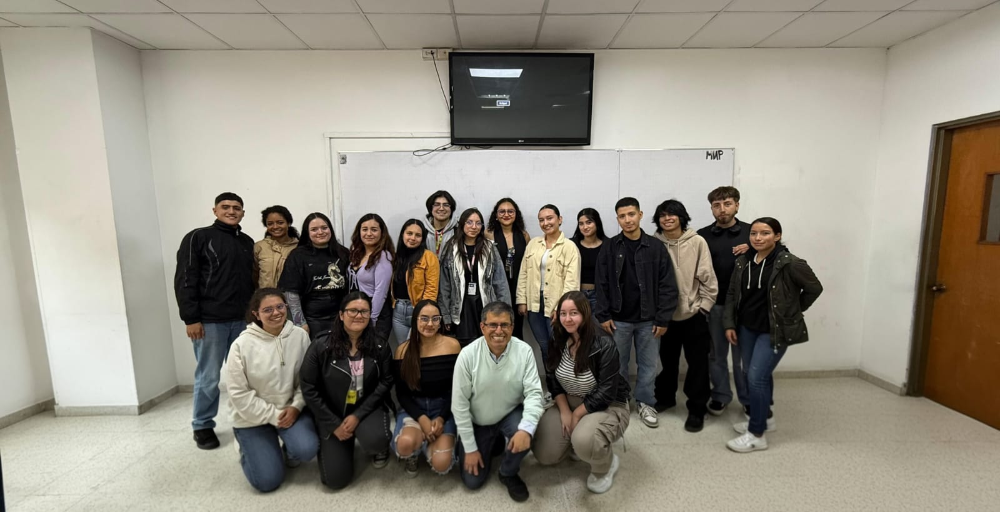

El Semillero de Geodesia Satelital, Geofísica y Gestión del Riesgo de la Universidad Distrital Francisco José de Caldas es un espacio para fomentar la investigación y el aprendizaje en ciencias de la Tierra. Sus líneas principales abarcan la geodesia satelital, los métodos geofísicos y la gestión del riesgo, fortaleciendo la formación académica y científica de los estudiantes.
En los últimos años, hemos logrado avances significativos, como la vinculación de miembros a la sección de Geodesia del Instituto Geográfico Agustín Codazzi, consolidando al semillero como un espacio de oportunidades y conexión académica.
Promovemos el trabajo interdisciplinario, el desarrollo de habilidades técnicas, la participación en eventos, publicaciones y proyectos con impacto en la comunidad. Invitamos a quienes se interesen por las ciencias de la Tierra y la investigación aplicada a unirse y aportar al conocimiento y al desarrollo sostenible.
Geodesia Satelital
La geodesia satelital es un eje clave de investigación en el semillero, apoyada en softwares especializados como GAMIT/GLOBK, GPSTk y gLAB. La capacitación, liderada por los mismos estudiantes, fomenta un aprendizaje autónomo y colaborativo, esencial para el trabajo en esta área.
Hoy en día, sus aplicaciones trascienden la simple determinación de coordenadas, aportando a estudios sobre cambio climático, movimientos tectónicos y modelación de la superficie terrestre. Estos avances permiten a los integrantes adquirir competencias técnicas y analíticas, al tiempo que contribuyen con investigaciones de impacto científico y ambiental.
Geofísica
La geofísica es una disciplina clave dentro del semillero, enfocada en la exploración y estudio de las propiedades físicas de la Tierra mediante métodos no invasivos. Los estudiantes adquieren experiencia en técnicas como gravimetría y magnetometría.Estas metodologías permiten caracterizar estructuras subterráneas, identificar recursos naturales y comprender procesos geodinámicos, contribuyendo a investigaciones científicas y proyectos de ingeniería con relevancia ambiental y social.
El semillero promueve la formación integral de sus integrantes mediante la participación activa en proyectos de investigación, desarrollo tecnológico y difusión del conocimiento geofísico, fomentando habilidades analíticas y prácticas que fortalecen su perfil profesional.
Gestión del Riesgo
La gestión del riesgo es un eje transversal dentro del semillero, orientado a la identificación, evaluación y mitigación de amenazas naturales y antrópicas que afectan el territorio. A través del uso de herramientas geoespaciales, modelación y análisis de vulnerabilidades, los estudiantes participan en la formulación de estrategias que contribuyen a la prevención y reducción del impacto de desastres.
Este enfoque integral incluye la evaluación de riesgos asociados a fenómenos como inundaciones, movimientos en masa, sismos y cambio climático, buscando fortalecer la resiliencia comunitaria y el desarrollo sostenible en las regiones estudiadas.